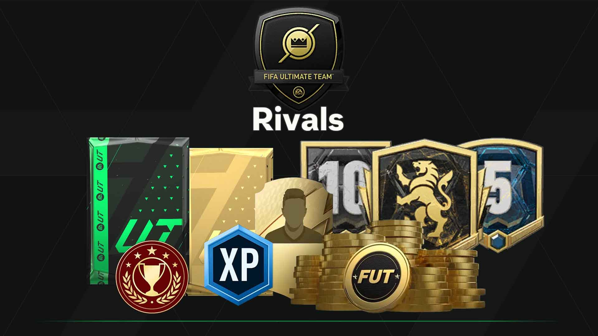
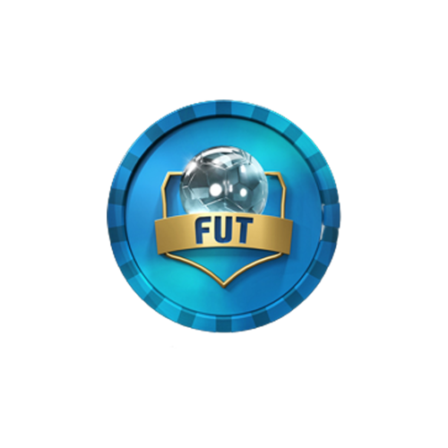

Squad Battles
En “Squad Battles”, juegas contra equipos controlados por la IA que han sido creados por otros jugadores de FIFA de todo el mundo.
Cada victoria que obtienes te otorga puntos que determinan tu rango en la clasificación semanal. Al final de cada semana, recibes recompensas basadas en tu rango,
que pueden incluir monedas, paquetes de jugadores y otros elementos para mejorar tu equipo de FUT. Es importante mencionar que los equipos contra los que juegas
en “Squad Battles” no son controlados por otros jugadores en tiempo real, sino por la IA del juego. Esto puede hacer que “Squad Battles” sea una buena opción si
prefieres jugar contra la IA en lugar de contra otros jugadores en tiempo real.

DIVISION RIVALS
En este modo, los jugadores compiten en partidos en línea contra otros jugadores de todo el mundo.
Los jugadores son clasificados en divisiones basadas en su habilidad y rendimiento en los partidos.
A medida que ganas partidos, puedes ascender a divisiones superiores y enfrentarte a oponentes más desafiantes.
También puedes ganar recompensas basadas en tu rendimiento y clasificación en tu división.

FUT Champions
FUT Champions es un modo de juego competitivo en FIFA Ultimate Team (FUT) de EA Sports.
Los jugadores pueden competir en partidos durante en el la semana en el modo DIVISION RIVALS para clasificar para el fin de semana
de FUT Champions, donde pueden ganar recompensas basadas en cuántos partidos ganan.
Cabe recalcar que es la mayor competitividad del juego.

FUT DRAFT
FUT Draft es una modalidad dentro del juego FIFA Ultimate Team (FUT) de EA Sports.
En FUT Draft, los jugadores pueden construir un equipo desde cero, seleccionando un jugador
para cada posición desde un conjunto de cinco jugadores elegidos al azar. Este modo de juego
permite a los jugadores experimentar con diferentes formaciones y jugadores que normalmente no
podrían permitirse en el modo FUT estándar.
